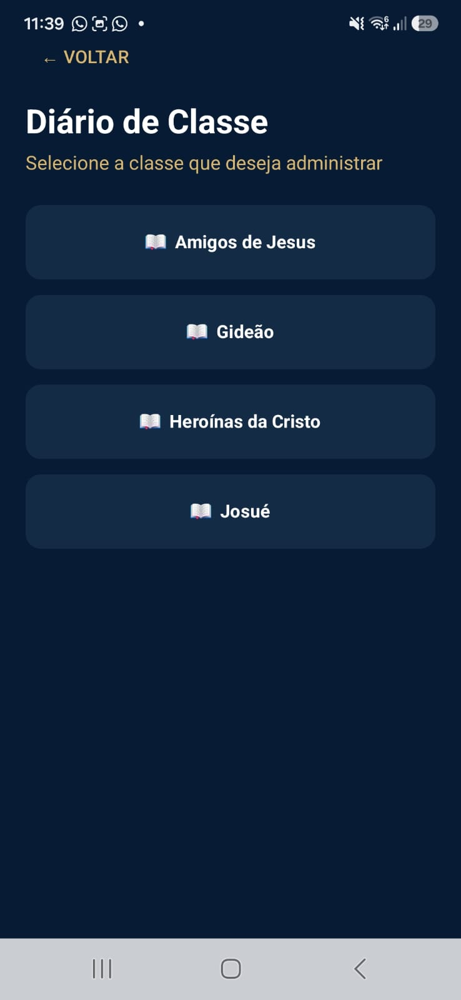
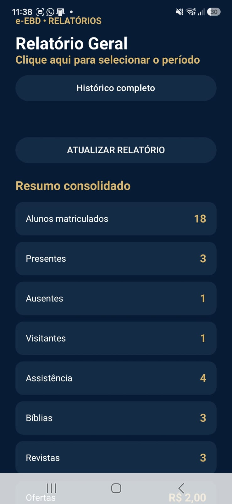
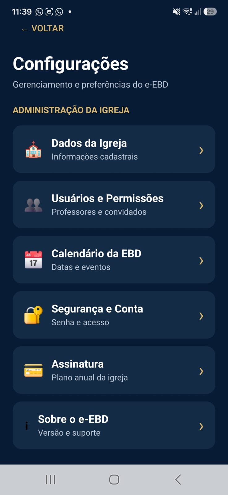

Gestão Centralizada
Organize professores, classes e alunos em um único sistema.
“Servi uns aos outros, cada um conforme o dom que recebeu, como bons despenseiros da multiforme graça de Deus.” 1 Pedro 4:10
Conheça o e_EBD, o aplicativo que facilita a gestão de professores, classes, alunos, chamadas, diários dominicais e relatórios.
✓ Uma assinatura para toda a igreja
Uma solução digital desenvolvida para simplificar o trabalho de superintendentes e professores.
Organize professores, classes e alunos em um único sistema.
Registre presenças e ausências dos alunos diretamente pelo celular.
Acompanhe indicadores das classes e os resultados consolidados.
Acesse as ferramentas do e_EBD com uma interface simples e moderna.
Registre visitantes, Bíblias, revistas, ofertas e frequência.
Professores e superintendentes utilizam perfis com permissões específicas.
Uma solução completa para modernizar a gestão da Escola Bíblica Dominical.
Gerencie professores, classes, alunos e acompanhe os resultados da Escola Bíblica Dominical.
Acesse sua classe, matricule alunos, realize chamadas e preencha o diário dominical.
Registre presenças, ausências, visitantes, Bíblias, revistas e ofertas de cada domingo.
Acompanhe os indicadores das classes e visualize os resultados consolidados.
Conheça as principais telas do ao App da sua Igreja.







Veja os vídeos e descubra como o APP e-EBD facilita a gestão da Escola Bíblica Dominical.
Conheça a administração de professores, classes, alunos, diários e relatórios.
Veja como acessar a classe, matricular alunos, realizar chamadas e preencher o diário dominical.
Administre sua Escola Bíblica Dominical com uma assinatura anual simples, acessível e organizada.
✓ Acesso do Superintendente
✓ Acesso dos professores autorizados
✓ Cadastro de classes e alunos
✓ Chamada digital
✓ Diário de classe dominical
✓ Relatórios e gráficos
✓ Uma assinatura para toda a igreja
Os professores não precisam contratar assinaturas individuais.
Encontre respostas para as principais dúvidas sobre o aplicativo e_EBD.
Não. A assinatura é por igreja. Todos os professores autorizados podem utilizar o aplicativo sem pagar assinaturas individuais.
O valor da assinatura é de R$ 300,00 por ano, por igreja.
Não. O professor utiliza o acesso autorizado pelo superintendente da igreja.
Sim. O e_EBD permite organizar diferentes classes, cadastrar alunos e acompanhar os registros de cada turma.
O responsável realiza o cadastro da igreja. Após a confirmação do pagamento da assinatura anual, o acesso às funcionalidades é liberado.
Sim. O superintendente possui acesso à visão consolidada das classes, com indicadores e relatórios da igreja.
Ainda tem alguma dúvida?
Entre em contatoTodas as classes, alunos, chamadas, diários e relatórios diretamente pelo celular com o e_EBD.
Em preparação para lançamento na Google Play.
Preencha o formulário para receber informações sobre nosso aplicativo.